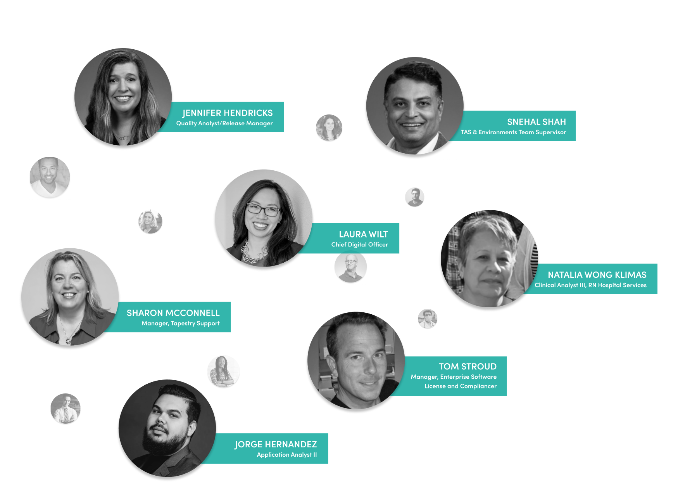
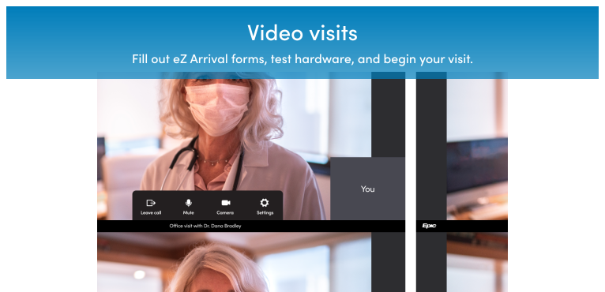
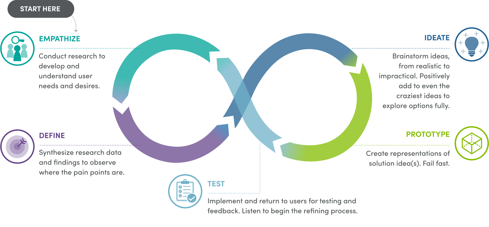
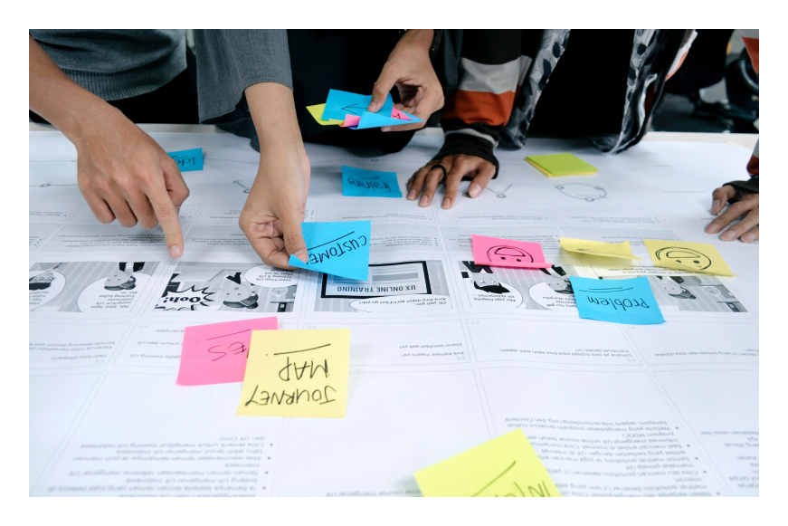

Sutter Digital includes Information Services, Digital Health, and Design and Innovation. Together, our teams work towards the digital transformation of Sutter Health and products and services for the future.

WHO IS SUTTER DIGITAL?
The Sutter Digital team is comprised of people of all talents. Here’s a sampling of team members across the departments that make up Sutter Digital.
Sutter Digital
Case Studies
Scroll to see a selection of current work our digital team is currently working on, as featured at this year’s Management Symposium
Build resilience and manage your everyday mental health
Scout is a digital toolkit that helps to build resilience and better manage everyday mental health. For all teens and young adults, 13-22. Tools and tips for families and caregivers too!
Your health records at your fingertips on your phone, tablet and computer make managing your health care a breeze.
Did you know? MHO has...

With a host of other features like...
Schedule in-person appointments
Schedule video visits
Message to your doctor’s office
Renew your prescriptions
Pay a bill
Check your symptoms
Find an urgent care clinic
Find a walk-in care clinic
See your test results
Designed for expectant patients with low-risk pregnancies, Healthy Pregancy focuses on the delivery of timely education throughout the course of a patient’s pregnancy.
12,221
Patients enrolled
of 26000 pregnant women in the Sutter system
Provider and patient are guided with the right messages at the right times:
New Baby Care Companion
Timely clinical information, support, and well-child visit reminders.
All babies aged 0-12 months born on or after June 1 will be automatically enrolled.
Human-Centered Design is an approach to problem-solving that develops solutions by involving the human perspective in all steps of the process.

We use human-centered design to develop innovative solutions for our patients and staff. Below is one such example we're currently working on.

The Experience Blueprint is a visual plan that uses the human-centered design process to develop a collaboratively designed user experience of care, addressing key needs in key moments in a journey across space, digital, and service interactions.